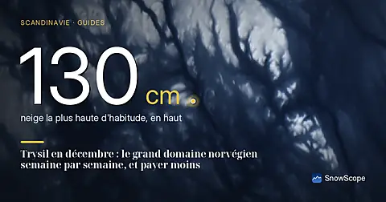

Bulletins neige · Scandinavie
Des bulletins neige quotidiens pour les skieurs : où est la neige, ce qui arrive et où skier, d'après la carte de neige SnowScope et les stations de mesure. Chaque chiffre vient des données du jour.
La neige par pays aujourd'hui
Les pays les plus blancs aujourd'hui : Suède (96 %), Finlande (95 %) et Norvège (93 %).
Le plus de neige fraîche dans la semaine : Norvège (31 cm), Suède (16 cm) et Finlande (6 cm).
La neige aujourd'hui dans les grandes stations
- Abisko · 137 cm
- Sulitjelma Fjellandsby · 124 cm
- Tromsø Alpinpark · 70 cm
- Bydalsfjällen · 46 cm
- Gräftåvallen · 45 cm
- Hemsedal skisenter · 41 cm
- Orsa Grönklitt · 41 cm
- Myrkdalen · 36 cm
- Jølster Skisenter · 35 cm
- Volda skisenter · 32 cm
- Åre · 32 cm
- Hornindal · 31 cm
- Järvsöbacken · 30 cm
- Lindvallen · 27 cm
- Surnadal · 26 cm
- Sunndal alpinsenter · 25 cm
- Rukatunturi · 24 cm
- Tusten Skiheiser · 24 cm
- Kiririnteet · 23 cm
- Ramundberget · 23 cm
- Saariselka · 23 cm
- Ski Saariselkä · 23 cm
- Skarmoen Alpinpark Bodø · 21 cm
- Storlien · 21 cm

Les chances de neige à Idre Fjäll en décembre s'améliorent nettement après la mi-mois. Le 13 novembre, l'épaisseur typique à mi-montagne le 15 décembre est de 32 cm.

Sälen en décembre : 28 cm un 15 décembre typique et 48 % des hivers avec 30 cm à la mi-décembre, moins qu'aux années 1980 ; Trysil, à côté, fait mieux.

Le forfait 6 jours de Ruka coûte 265 EUR. Les chances de neige passent de 39 % en début décembre à 85 % à la semaine de Noël. Prévoyez la mi-décembre ou plus tard.

Mi-montagne à Hemavan compte 82 cm de neige en moyenne le 15 décembre. Chaque hiver depuis 46 ans a eu 30 cm ou plus mi-décembre. Données du 13 novembre 2026.

La base d'Oppdal compte 60 cm de neige un 15 décembre type, avec 93 % des hivers conservant 30 cm ou plus à la mi-décembre. Données de 46 hivers.

Le secteur médian de Geilo reste skiable en décembre dans 96 % des cas. Épaisseur type le 15 décembre : 42 cm en bas, 57 cm au milieu, 68 cm en haut. Forfait journée à partir de 590 NOK.

Le 15 décembre, Hemsedal affiche 32 cm en bas, 70 cm à mi-montagne et 106 cm en haut. L'altitude est décisive ici.

La neige de décembre à Levi s'est renforcée au fil du temps. Ces 15 derniers hivers : 100 % des semaines de Noël ont eu 30 cm ou plus. Profondeur typique 15 décembre : 38 cm. Données 13 novembre 2026.

À mi-montagne, la neige atteint 30 cm dans 83–100 % des décembres en Scandinavie. Tarifs fixes en Finlande ; tarification dynamique en Norvège et Suède. Données de 46 hivers, 13 novembre 2026.

Trysil en décembre : 44 cm à mi-pente un 15 décembre typique, 83 % des hivers avec 30 cm à la mi-décembre ; les prix sont dynamiques, réservez tôt.

Åre en décembre : 40 cm à mi-pente un 15 décembre typique, 89 % des hivers avec 30 cm à la mi-décembre, mais une forte baisse au sommet depuis les années 1980.